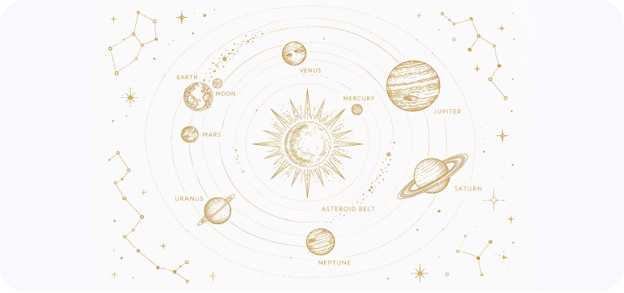

Learn what each planet means in astrology, from the personal planets (Sun, Moon, Mercury, Venus, Mars) through the outer planets (Jupiter, Saturn, Uranus, Neptune, Pluto) plus Chiron and Black Moon Lilith.

In astrology, each planet represents a core drive or dimension of human experience. The sign a planet occupies at your birth colors how that energy expresses, while the house it falls in shows the area of life where it plays out most strongly. Together, the planets form the foundation of your natal chart.
The personal planets (Sun through Mars) move quickly and shape your individual personality and daily life. The social planets (Jupiter, Saturn) govern growth and structure over longer cycles. The outer planets (Uranus, Neptune, Pluto) move so slowly they define the themes of entire generations.
Identity & Life Purpose
The Sun represents your core identity, ego, and life purpose. It is the central force of the birth chart, describing who you are at the deepest level, what drives your sense of self, and where you seek to shine.
Grounding & Physical Reality
The Earth is always directly opposite the Sun in your chart. It represents where you ground your solar energy into practical, physical reality. The Earth sign and house point to the resources and material foundations that support your life purpose.
Emotions & Inner World
The Moon governs your emotional nature, instincts, and subconscious patterns. It reveals how you process feelings, what makes you feel safe, and what you need for emotional nourishment. Your Moon sign describes your inner world and habitual responses.
Communication & Thought
Mercury rules the mind, communication, and how you process and share information. It governs learning style, logical thinking, speech, writing, and everyday exchanges. Your Mercury sign shapes the way you think, argue, and make sense of the world.
Love, Beauty & Values
Venus governs love, beauty, pleasure, and what you value most. It shapes how you attract and relate to others, your aesthetic sensibilities, and your approach to romance and harmony. Your Venus sign reveals what you find beautiful and how you express affection.
Action & Drive
Mars is the planet of action, desire, physical energy, and courage. It governs how you assert yourself, pursue what you want, and handle conflict. Your Mars sign describes your fighting style, your physical drive, and how you channel anger and ambition.
Expansion & Abundance
Jupiter is the great benefic, the planet of expansion, optimism, abundance, and higher learning. It governs philosophy, travel, faith, and the search for meaning. Your Jupiter sign and house show where life tends to open doors for you and where you find your greatest purpose.
Structure & Discipline
Saturn is the taskmaster of the zodiac, governing discipline, responsibility, boundaries, and long-term achievement. It represents the areas of life where you face your greatest challenges and, through perseverance, earn your deepest mastery. The Saturn Return around ages 29 and 58 marks pivotal periods of restructuring.
Revolution & Innovation
Uranus is the planet of sudden change, rebellion, innovation, and liberation. It governs where you break free from convention, embrace your individuality, and experience unexpected breakthroughs. Uranus spends about 7 years in each sign, shaping generational attitudes toward freedom and progress.
Spirituality & Imagination
Neptune governs dreams, intuition, spirituality, compassion, and the dissolution of boundaries. It rules imagination and artistic inspiration but can also bring confusion, illusion, and escapism. Neptune spends about 14 years in each sign, shaping generational ideals around faith, art, and collective yearning.
Transformation & Power
Pluto is the planet of transformation, death and rebirth, power, and the unconscious. It governs deep psychological processes, obsession, regeneration, and the destruction of what no longer serves growth. Pluto spends 12 to 30 years in a sign, driving profound generational shifts in how society relates to power.
Soul's Growth Direction
The North Node points to the qualities, experiences, and life direction your soul is growing toward in this lifetime. It represents unfamiliar territory that feels challenging but ultimately fulfilling. The sign and house of your North Node describe the lessons you are here to learn.
Karmic Past & Comfort Zone
The South Node represents innate talents, default patterns, and qualities carried over from past experience. It describes your comfort zone and the skills that come naturally but can also hold you back if you rely on them too heavily. Balancing North and South Node themes is central to the soul's journey.
The Wounded Healer
Chiron orbits between Saturn and Uranus, known as the Wounded Healer. It represents a deep, core wound that you carry through life and, through confronting it, develop the ability to heal others. Your Chiron sign and house reveal where your greatest vulnerability and most profound wisdom lie.
Raw Desire & Shadow Self
Black Moon Lilith is not a physical body but a mathematical point representing the lunar apogee, the point where the Moon is farthest from Earth in its orbit. It symbolizes your raw, untamed desires, suppressed instincts, and the parts of yourself that society pressures you to hide. Your Lilith sign and house reveal where you refuse to compromise, where you feel shame or rage, and where reclaiming your authentic power leads to liberation.
Tip
Two people born just days apart can have very different charts. The Moon changes signs every 2.5 days, and Mercury and Venus shift frequently as well. Even small differences in birth time can move planets into different houses, changing how their energy plays out in your life.
The sign a planet occupies colors how that planet's energy expresses. The same planet behaves very differently depending on which sign it falls in. Below are examples showing how a single planet shifts its expression across the zodiac.
Quick & Direct
Thinks fast, speaks bluntly, and makes snap decisions. Aries Mercury is competitive in debate and impatient with drawn-out explanations. Ideas come in bursts and are acted on immediately.
Analytical & Precise
Mercury is in its rulership and exaltation in Virgo, making this one of its strongest placements. Thinking is methodical, detail-oriented, and practical. Virgo Mercury excels at organizing information and problem-solving.
Intuitive & Poetic
Thinks in images, metaphors, and feelings rather than linear logic. Pisces Mercury absorbs information through atmosphere and intuition. Communication is creative and empathetic but can be vague or elusive.
Sensual & Steady
Venus is in its home sign in Taurus. Love is expressed through physical touch, loyalty, and creating beautiful, comfortable spaces. Values security and consistency in relationships above all.
Intense & Transformative
Love is all or nothing. Scorpio Venus craves deep emotional and physical intimacy, is fiercely loyal, and struggles with jealousy or possessiveness. Relationships are vehicles for profound transformation.
Independent & Unconventional
Values intellectual connection and personal freedom in love. Aquarius Venus is attracted to unique, original people and resists traditional relationship structures. Friendship is the foundation of romance.
Tip
Your Sun sign is just the beginning. To understand your full communication style, look at your Mercury sign. For love and relationships, look at Venus. For drive and ambition, check Mars. Each planet tells a different part of your story.
While the sign shows how a planet expresses, the house shows where in your life that energy plays out. The same planet in the same sign will manifest very differently depending on which house it occupies.
1st House
Identity & Appearance
Mars energy is visible to everyone. You come across as assertive, competitive, and physically energetic. First impressions are bold and direct. There is a natural athleticism and an unmistakable drive in your personality.
7th House
Partnership & Marriage
Venus is at home in the 7th House of partnership. Relationships tend to be harmonious and central to your life. You attract partners with grace and beauty, and creating balance within one-to-one connections is a core life theme.
10th House
Career & Public Image
Your identity is closely tied to your career and public reputation. There is a strong drive toward achievement, visibility, and recognition. Authority comes naturally, and your life purpose often unfolds through professional accomplishments.
12th House
Solitude & Karma
Hidden fears and responsibilities, spiritual discipline through solitude, karmic work done behind the scenes. Saturn here demands that you confront subconscious limitations and develop inner strength through periods of withdrawal and reflection.
4th House
Home & Emotional Roots
The Moon is powerfully placed in its natural house. Emotional security is deeply tied to home, family, and a sense of belonging. There is a strong connection to ancestry and childhood memories shape adult emotional patterns profoundly.
2nd House
Wealth & Self-Worth
Jupiter expands everything it touches, and in the 2nd House it brings natural abundance and a generous relationship with money. Earning tends to come through optimism, wisdom, or teaching. There is an innate sense of self-worth and material confidence.
Tip
An empty house does not mean that area of life is inactive. The sign on the house cusp and its ruling planet still influence that domain. Planets in houses simply add extra emphasis and complexity to those life areas.
Celebrity Database
Search by name and explore free Human Design charts calculated across 7 systems. Filter by Type, Profile, Authority, Sun Sign, Moon Sign, and more.
Search Celebrities →In astrology, each planet represents a fundamental drive or dimension of human experience. The Sun governs identity and life purpose. The Moon rules emotions and instincts. Mercury handles communication and thought. Venus governs love and values. Mars drives action and ambition. Jupiter expands and brings growth. Saturn structures and teaches discipline. The outer planets (Uranus, Neptune, Pluto) shape generational themes and deep transformation. The sign and house a planet occupies in your birth chart colors how that energy expresses in your life.
Personal planets (Sun, Moon, Mercury, Venus, Mars) move relatively quickly through the zodiac and shape your individual personality, daily habits, and close relationships. Social planets (Jupiter, Saturn) bridge the personal and collective, influencing growth, ambition, and life structure over longer cycles. Outer planets (Uranus, Neptune, Pluto) move so slowly they remain in a single sign for years or decades, shaping the themes of entire generations rather than individual traits alone.
In astrology, the Sun and Moon are traditionally grouped with the planets and called luminaries. Although astronomically the Sun is a star and the Moon is a satellite, astrology uses the term "planets" as shorthand for all celestial bodies that move through the zodiac and carry symbolic meaning in a birth chart. This convention dates back thousands of years to when all visible moving celestial objects were called wandering stars.
A planetary return occurs when a transiting planet returns to the exact position it occupied at the moment of your birth. The most well-known is the Saturn Return around ages 29 and 58, which marks major periods of restructuring and maturity. The Jupiter Return happens roughly every 12 years and often brings expansion and opportunity. The Chiron Return around age 50 signals a period of deep healing and wisdom.
When a planet appears to move backward through the zodiac from Earth's perspective, it is said to be in retrograde. Retrograde periods are associated with review, reflection, and revisiting themes related to that planet. Mercury retrograde is the most discussed, often linked to communication mix-ups and travel delays. All planets except the Sun and Moon go retrograde periodically, and these periods are generally seen as times to slow down and look inward rather than push forward.
Explore all 12 zodiac signs, their elements, modalities, and the personality traits each sign brings to your chart.
Discover the 12 houses of the birth chart and how they map the key areas of your life experience.
Learn how planets interact through aspects like conjunctions, trines, squares, and oppositions in your chart.
Access detailed astrology charts, Human Design charts, and hundreds of views and tools with a Genetic Matrix Pro membership.
Get Pro →